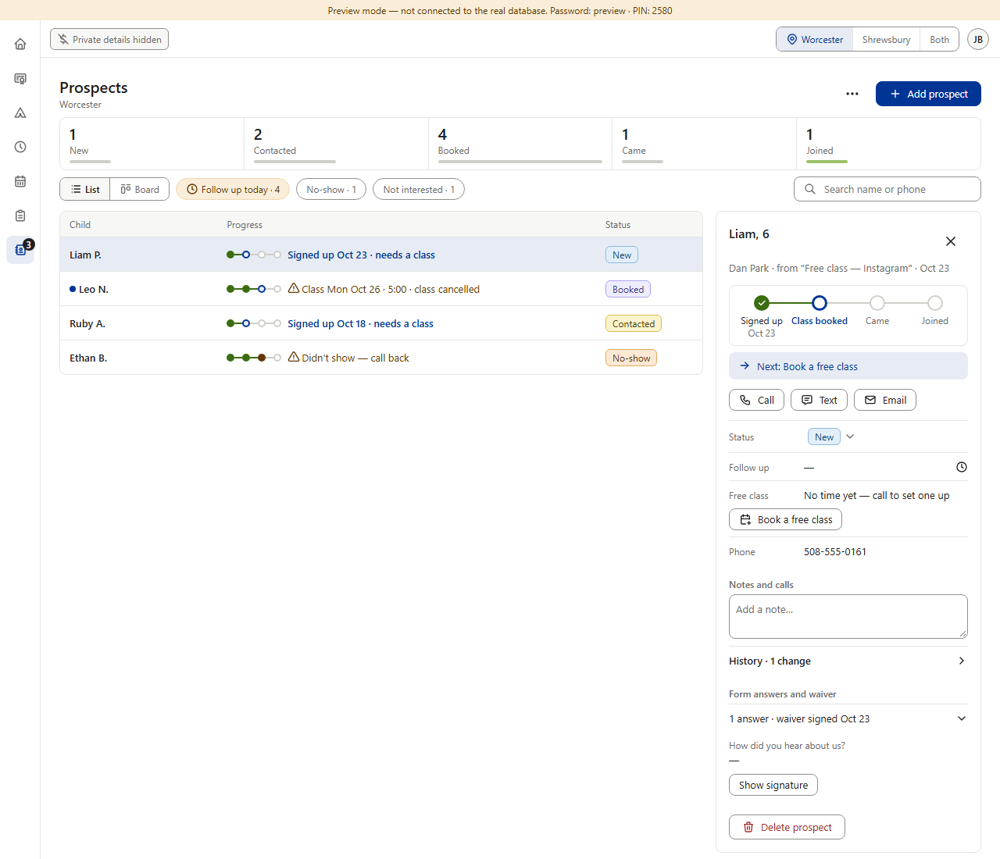
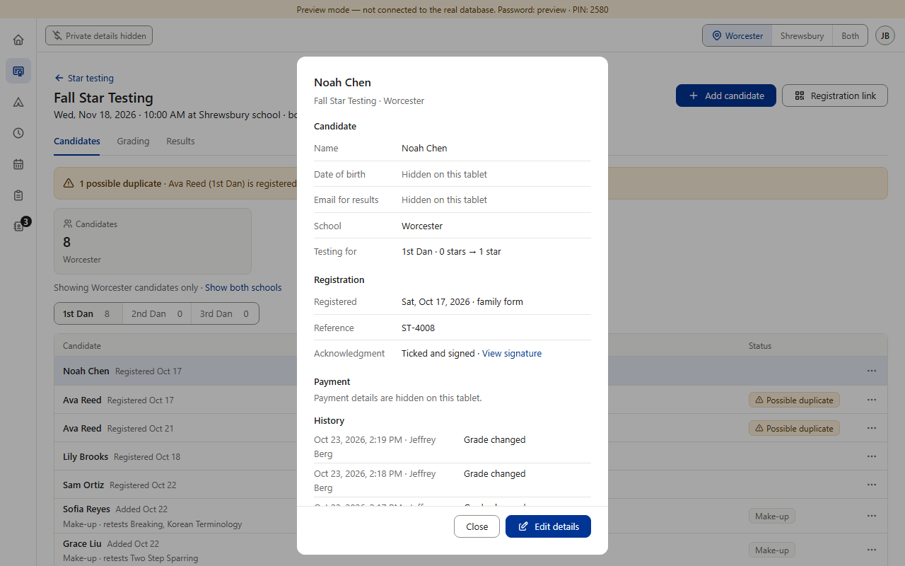
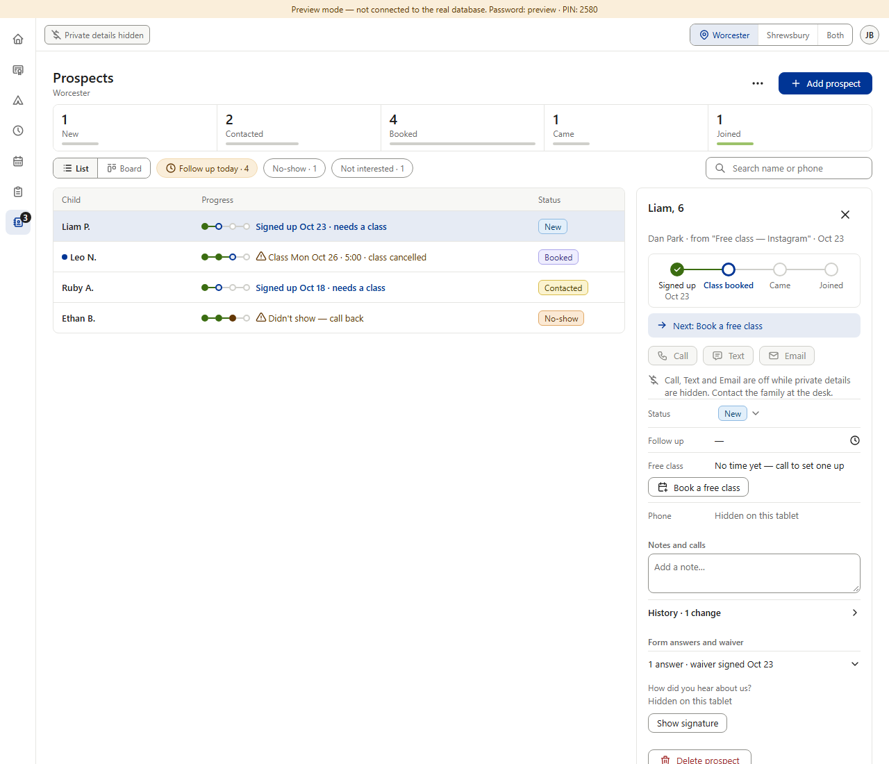
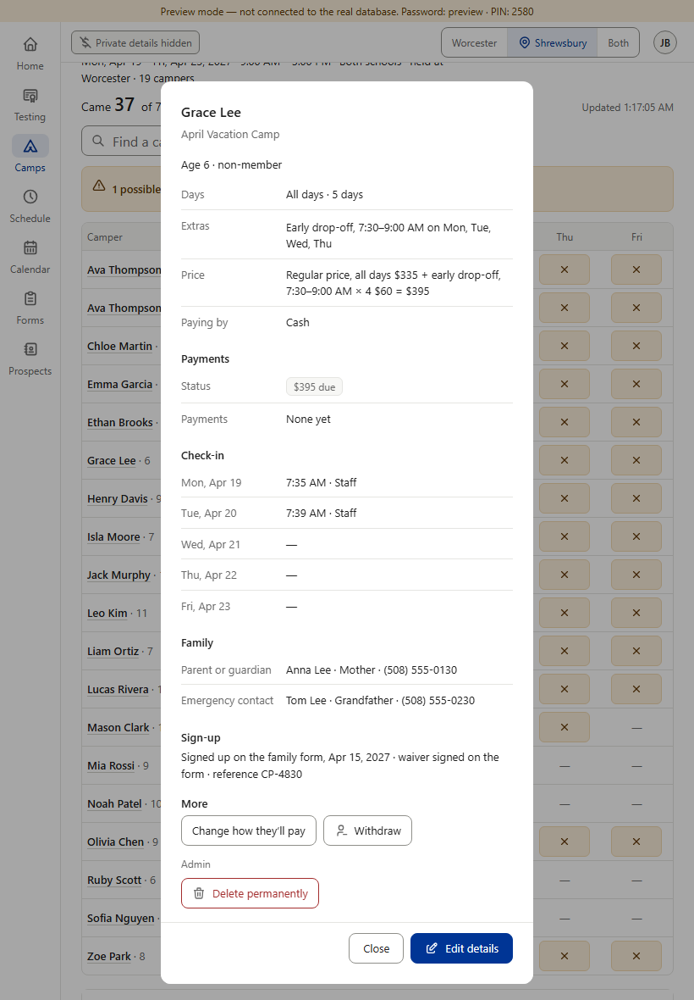

Open detail D2a · What “Hide private details” hides in Prospects
From item 2; for the new-students prompt (Prospects). The rule (v0.249, v0.506): while the switch is on, date of birth, email and every payment detail are hidden on every screen, shown as gray “Hidden on this tablet” (v0.507). Prospects doesn't follow it, and its plan doesn't mention it (missing, not planned): with the switch on, the panel's Email button still opens the family's address, and Form answers and waiver still lists every answer — a form can add its own questions, such as a date (a birthday), an email, or the event form's “Anything we should know?”, where families write health notes. The phone number shows too; the rule doesn't name phones. Star already does it (picture 2), and its Email result button grays with one line saying why (v0.514). Staff accounts' staff emails are the next question (D2b). (Preview screenshots · PC size · fake data)
Today

1. Prospects with the switch on (the top bar says “Private details hidden”): Email still opens the family's address; the phone shows; Form answers list every answer.

2. The model — Star's candidate detail, switch on: Date of birth and Email read “Hidden on this tablet”; “Payment details are hidden on this tablet.”; View signature stays.
The switch is on in pictures 1, 3 and 4: the top bar shows its chip, “Private details hidden”.
Proposed · options B and C drawn
3. Option B (recommended): Email grays, with Star's kind of line: “Email is off while private details are hidden. Email the family at the desk.”; every answer reads “Hidden on this tablet” (the questions and Show signature stay, as in Star); Call, Text and the phone stay.

4. Option C: B, plus Call and Text gray (“Call, Text and Email are off … Contact the family at the desk.”) and the Phone row hidden.

5. With C, Camps follows (one rule on every screen): the camper detail's parent and emergency phones would read “Hidden on this tablet” on the camp tablet too.
The rule in B: the switch hides date of birth, email, every payment detail — and form answers, because a form can ask a birthday or an email and the dashboard can't tell which answers are private — on every screen; phone numbers stay. Pictures 3–4 are drawn over the real panel; nothing in the app was changed.
Your choice — one question: what should “Hide private details” hide in Prospects? A · Only the email. Email grays with the line, as in picture 3; the answers and the phone stay as in picture 1. + the smallest change. − a form question that asks a birthday or an email still shows it on that tablet, though the rule says those hide; health notes show. B · Recommended: the email and the form answers (picture 3).+ covers everything the rule names, wherever a form puts it; health notes hidden; copies Star's approved look; calling still works. − on that tablet staff can't read the answers (one tap on the top-bar chip turns the switch off, or use the desk computer). C · Also the phone (pictures 4–5). The rule grows to: date of birth, email, phone, form answers, payments. + nothing that reaches a family shows on that tablet. − no calling from that device; Camps' parent and emergency phones hide on the camp tablet too; a bigger change to v0.249 / v0.506.